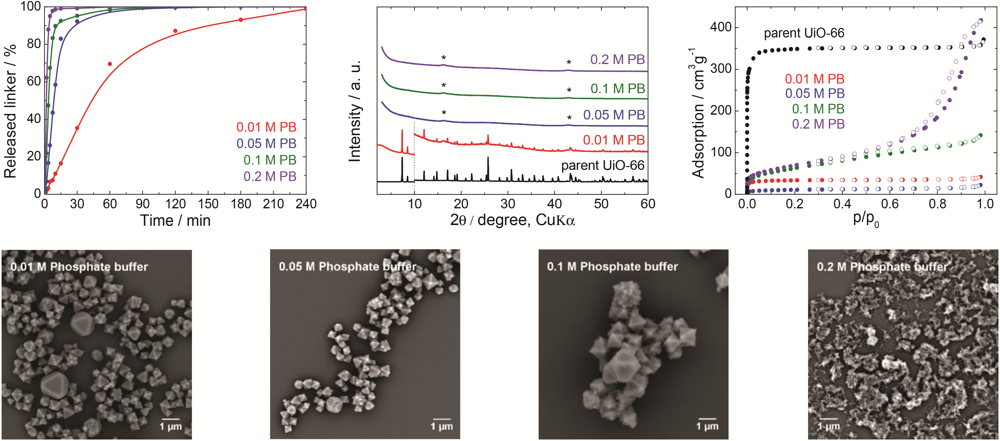
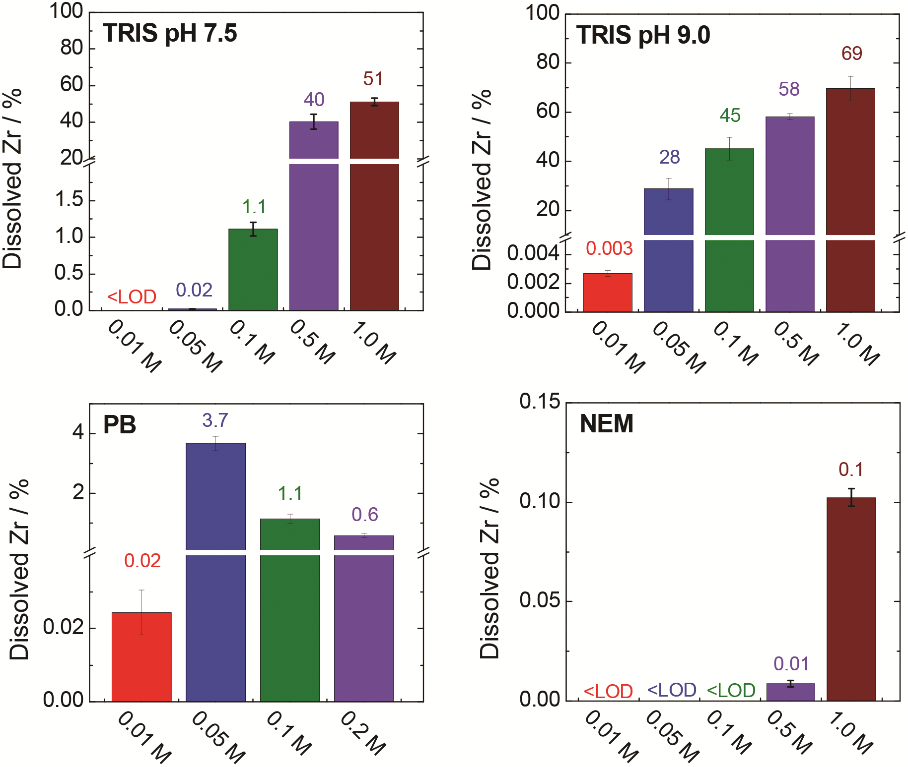

UiO-66 遇上缓冲液： 晶体还在，框架就完整吗？UiO-66 in buffers: when crystals hide damage
在 0.01 M 磷酸盐缓冲液中处理 4 小时后，X 射线衍射仪的粉末测试（PXRD）仍测到 UiO-66 的特征峰。但同条件下，99% 的连接体已进入液相。峰还在，框架为什么已不完整？先看仪器测到了什么，再追踪材料去了哪里。After four hours in 0.01 M phosphate buffer, a powder X-ray diffraction (PXRD) measurement still detects characteristic UiO-66 peaks. Yet 99% of the linker has entered the liquid under the same conditions. Why do peaks remain when the framework is no longer intact? First understand the measurement, then follow the material.
本页讨论论文所测批次和条件；其他 UiO-66 材料需要各自验证。This page concerns the tested batch and conditions; other UiO-66 materials need their own validation.
阅读起点：高中知识；先认识材料和仪器，再看证据。机制与研究层保留进一步解释和实验细节。Starting point: high-school knowledge. Meet the material and instruments before evaluating evidence; mechanism and research levels retain further explanation and experimental detail.
读完你应能解释：为什么衍射峰、滤液中的锆、连接体释放会给出不同信号，以及怎样用这些信号作出有边界的判断。After reading, you should be able to explain why diffraction, zirconium in the filtrate and linker release give different signals—and combine them into a bounded conclusion.
要保住一个 MOF，需要保住什么？What must survive in a MOF?
先把 MOF 想成分子尺度的有孔支架：含金属的连接中心由有机分子连接，空隙可让一些分子进入。MOF 是“金属有机框架”的缩写；UiO-66 是其中一种材料的名称，不是化学式。Think of a MOF as a porous scaffold at the molecular scale: metal-containing junctions are linked by organic molecules, leaving spaces that some molecules can enter. MOF means metal–organic framework; UiO-66 is the name of one such material, not a chemical formula.
含锆节点Zr-containing nodes
锆是一种金属元素，符号 Zr。这里多个锆原子与氧组成一个连接中心，叫“节点”或“簇”。Zirconium is a metallic element, symbol Zr. Several Zr atoms and oxygen form one connecting unit, called a node or cluster.
有机连接体Organic linkers
对苯二甲酸根像节点之间的桥，称连接体或配体；它的含氧端与金属结合，这种连接称配位键。桥的比喻只解释连接作用。Terephthalate bridges between nodes and is called a linker or ligand. Its oxygen-containing ends bind metals through coordination bonds. The bridge analogy describes only the connecting role.
孔隙与有序排列Pores and order
分子可以进入一些空隙，并停留在内表面——这是吸附。整齐排列、连接未断和孔道能进入，是三个不同的问题。Molecules can enter some voids and attach to internal surfaces—this is adsorption. Ordered arrangement, intact connections and accessible pores are three different questions.
“缺陷”是偏离理想完整连接的部位，例如缺少节点或连接体。本文的起始样品含缺陷，作者主要归为缺簇；因此它的结果不能代表所有 UiO-66 批次。A defect is a departure from ideal connectivity, such as a missing node or linker. The authors assign this starting sample mainly to missing-cluster defects, so its results cannot represent every UiO-66 batch.
先看懂仪器留下的那组峰First, understand the peaks
这里的仪器是 X 射线衍射仪。粉末 X 射线衍射（PXRD）是它的一种测量方式：用 X 射线照射粉末，记录不同角度的散射强度。它给出的是一条曲线，不是颗粒的显微照片。The instrument is an X-ray diffractometer. Powder X-ray diffraction (PXRD) illuminates a powder with X-rays and records scattered intensity at different angles. Its output is a pattern, not a microscope image of the particles.
01 · 照射粉末，接收散射01 · Illuminate and detect
2θ 是入射方向与探测到的散射方向之间的夹角。2θ is the angle between the incident and detected scattered directions.
02 · 把“角度—强度”画成曲线02 · Plot intensity against angle
教学示意：只解释测量关系；不表示 UiO-66 的真实峰位、峰高或原子结构。通用原理见 Teaching schematic of the measurement only; no actual UiO-66 peak positions, heights or atomic structure. General background: IUCr, §3.2.1–3.2.2。
在原文图 4 中，找到这组峰Find those peaks in the original Figure 4
先对照最下方的黑色原始 UiO-66与其上方的红色 0.01 M PB曲线。红色样品在磷酸盐缓冲液中暴露 4 h；横向对应的若干尖峰，就是前文说的残余衍射特征。Start with the black parent UiO-66 pattern at the bottom and the red 0.01 M PB pattern above it. The red sample was exposed to phosphate buffer for 4 h; several peaks at corresponding horizontal positions are the residual diffraction features discussed above.

横轴：散射角 2θ（°）。纵轴：强度（a.u.，任意单位）。10° 虚线右侧放大较弱的衍射信号；星号 * 来自 Mylar 支撑膜，不是材料的特征峰。Horizontal: scattering angle 2θ (degrees). Vertical: intensity (a.u., arbitrary units). Weaker signals to the right of the 10° divider are enlarged. Asterisks mark the Mylar support, not characteristic peaks of the material.
“晶体特征”具体是什么？What is a “crystal signature”?
是一组与 UiO-66 参照图样对应的衍射峰，尤其是峰的位置；不只是“有一个尖峰”。它们支持回收固体中仍有 UiO-66 型有序晶相。A set of diffraction peaks, particularly their positions, corresponding to a UiO-66 reference pattern—not just any sharp peak. They support the presence of a UiO-66-like ordered crystalline phase in the recovered solid.
这一组峰没有告诉我们什么？What does that pattern leave unresolved?
本研究图 4 的曲线经过强度归一化和上下平移，便于比较峰形。不能据此读出剩余晶体占原样的百分比，也不能确认全部连接体和孔隙都保留。Figure 4 normalizes intensities and offsets curves vertically for comparison. Those curves do not yield the surviving crystalline fraction of the original sample or establish that all linkers and pores remain.
与原图配对的另一条证据：99% 连接体释放来自 HPLC（正文 Table 1），不是从这张 PXRD 图估读的。The paired evidence of 99% linker release comes from HPLC (main Table 1); it is not estimated from this PXRD pattern.
为什么要同时看“留下的”与“离开的”？Why examine both what remains and what leaves?
催化、传感和药物载体常需要指定酸碱度。pH 描述溶液酸碱性；缓冲液用能接受或释放 H⁺（氢离子）的组分，抵抗少量酸或碱引起的 pH 变化。接下来要分清两种任务。Catalysis, sensing and drug carriers often require a specified acidity. pH describes acidity; a buffer uses components that accept or release H⁺ (hydrogen ions) to resist pH changes caused by small acid or base additions. Separate the following two tasks.
任务 1 · 稳住溶液 pH
少量酸／碱加入
↓
缓冲组分接受／释放 H⁺
↓
pH 变化较小
Task 1 · Resist pH change
A small acid/base addition
↓
Buffer components accept/release H⁺
↓
A smaller pH change
任务 2 · 保住材料连接
缓冲组分接触含锆节点
↓
可能发生配位等相互作用
↓
须另测连接体、锆和回收固体
Task 2 · Preserve the material
Buffer components contact Zr nodes
↓
Interactions such as coordination may occur
↓
Test linker, Zr and recovered solid separately
教学关系图，不是实测反应路径。缓冲容量指抵抗 pH 改变的能力；它不等于保护 MOF 的能力。本文比较两种任务能否兼容（Introduction；Discussion）。Teaching relationship diagram, not a measured reaction pathway. Buffer capacity means resistance to pH change; it is not protection of a MOF. This study tests whether both tasks are compatible (Introduction; Discussion).
0.01 M 怎么读？M = mol/L，表示每升溶液所含组分的物质的量；mol（摩尔）是计数大量微小粒子的单位。这里是论文定义的缓冲液浓度，不是 pH，也不是 1% 的质量比例。mg/L 则是每升液体中待测组分的质量。How do you read 0.01 M? M = mol/L: amount of substance per litre. A mole is a counting unit for a very large number of small particles. Here it is the paper’s buffer concentration, not pH or a 1% mass fraction. mg/L instead gives the mass of the measured component per litre.
同一批 UiO-66 → 按指定条件接触缓冲液One UiO-66 batch → exposure to a specified buffer
按检测对象，追踪两类证据 ↓Two types of evidence, organized by what is measured ↓
回收固体 · 留下了什么？Recovered solid · What remains?
PXRD读衍射峰 → 还有什么有序晶相Read peaks → which ordered phase remains
N₂ 吸附 / BETN₂ adsorption / BET测吸气量 → 估算每克回收固体的可及表面积Measure gas uptake → estimate accessible area per gram of recovered solid
SEM用电子束扫描成像 → 看颗粒形貌Scan with an electron beam → see particle morphology
共同盲区：不能直接清点进入液相的组分。Shared gap: these do not directly count components entering the liquid.
过滤后的液体 · 离开了什么？Filtered liquid · What has left?
HPLC · 高效液相色谱High-performance liquid chromatography分离成分并校准信号 → 测连接体浓度Separate components and calibrate signal → measure linker concentration
ICP-MS · 电感耦合等离子体质谱Inductively coupled plasma mass spectrometry测元素信号 → 测滤液锆浓度Measure elemental signal → quantify Zr in the filtrate
新增证据：流失多少？但滤液也不能交代全部固体、胶体及化学物种。Added evidence: how much is released? Filtrate alone cannot account for every solid, colloid or chemical species.
实验逻辑图，依据 Introduction 与 Experimental；不是物种比例图。两条液相检测使用对应条件下的平行实验，具体分样见下一节。BET 是由氮气吸附计算面积的模型；SEM 是扫描电子显微镜。Experimental logic from the Introduction and Experimental sections, not a species-fraction diagram. The two liquid analyses use parallel experiments under corresponding conditions; sample allocation follows below. BET is the model used to calculate area from nitrogen adsorption; SEM is scanning electron microscopy.
本文的关键改进：把两侧证据放在一起判断“稳定”，并比较缓冲液化学环境；并未合成一种新的、更稳定的 UiO-66。下一节解释为什么还要分样、做参照和监测时间。The contribution: combine both sides to assess “stability” and compare buffer chemistry; the paper does not synthesize a new, more stable UiO-66. Next, see why this needs separate aliquots, references and time monitoring.
出处：Introduction；Synthesis and characterization of UiO-66；Experimental；Figure 4；SI Figures S1–S3。Sources: Introduction; Synthesis and characterization of UiO-66; Experimental; Figure 4; SI Figures S1–S3.
同一批材料，为什么分样追踪两类组分？Why split one batch to follow two components?
连接体和锆原本属于同一框架，进入液体后却可能走向不同：连接体可留在液相，锆还可能形成其他固体或胶体。只测其中一种，无法判断另一种的去向；只看残余固体，又会漏掉已流失的部分。这就是同时测两种组分、再回看固体的理由。Linker and Zr start in the same framework but may take different paths: linker may remain in solution while Zr can form other solids or colloids. Measuring one component cannot locate the other; examining only recovered solids misses released material. This motivates two compositional measurements alongside solid characterization.
“同一批”使起始材料可比，不等于“同一个瓶子”。下图按四个问题展开设计；参照份会被完全分解，锆测量另用塑料容器中的平行实验。“One batch” gives a common starting material, not one physical bottle. Explore the four design questions below. Reference aliquots are fully decomposed, and Zr analysis uses parallel experiments in plastic vessels.
先问：原来有多少？First ask: how much was present initially?
为什么：必须把“测到多少”除以“原来有多少”，才能比较组分释放；还要知道残余固体与什么相比。Why: Released amount needs an initial-content denominator; recovered solids also need a parent reference.
先测 PXRD、氮气吸附与形貌。初始 BET 为 1395 m²/g。Record PXRD, nitrogen adsorption and morphology. Initial BET area: 1395 m²/g.
另一份：完全释放连接体Another aliquot: release all linker
50 mg 原样在 50 mL、1.0 M NaOH 中搅拌过夜；HPLC 得到 446 ± 16 mg/L。Stir 50 mg parent in 50 mL of 1.0 M NaOH overnight; HPLC gives 446 ± 16 mg/L.
再一份：测全部锆A further aliquot: measure all Zr
酸消解（把样品完全分解）后用 ICP-MS 测总锆；换算到暴露试验的质量／体积基准为 335 ± 12 mg/L。Use ICP-MS after acid digestion (complete sample decomposition); convert total Zr to the exposure mass/volume basis: 335 ± 12 mg/L.
得到什么：一份结构与孔隙的起点，两个各自独立的“100%”。没有这些参照，低浓度可能只是起始含量少，不能直接称为低释放率。What this supplies: a structural/porosity baseline and two separate “100%” references. Without these, a low concentration could simply reflect less initial material rather than a low released fraction.
这些是破坏性的参照测量，不是暴露实验的前处理；不能把分解后的参照液继续当成 UiO-66 使用。These are destructive reference measurements, not pretreatment of the exposure sample; digested reference solutions are not reused as UiO-66.
再问：差别来自怎样的暴露？Next: what exposure produced the difference?
为什么：对比要有共同起点与明确条件；容器本身也可能干扰锆读数。Why: Comparisons need a common starting material and defined exposure; the vessel itself can affect the Zr measurement.
另取同批 UiO-66：每次 50 mg + 最终 50 mL 介质Fresh aliquots from the batch: 50 mg + a final 50 mL medium per trial
路线 A · 玻璃瓶Route A · Glass bottle
用于连接体随时间释放的测量；可回收暴露后的固体。Follow linker release over time; recover the exposed solid when possible.
路线 B · 塑料管Route B · Plastic tube
对应条件的平行实验测锆；样品转移也用塑料器皿，避免锆与玻璃表面相互作用。A parallel experiment measures Zr under corresponding conditions. Plastic handling vessels avoid interactions with glass surfaces.
共同暴露条件：25 ± 1 °C、450 rpm 搅拌、4 h；每个试验做三次，并监测 pH。固液比、时间和温度给结果限定范围；监测 pH 是为了知道实际环境是否随反应改变。Shared exposure conditions: 25 ± 1 °C, stirring at 450 rpm, 4 h; each experiment repeated three times, with pH monitored. Solid/liquid ratio, duration and temperature define the comparison; pH monitoring checks whether the environment changes during exposure.
纯水参照：同样操作，用纯水替代缓冲液 → 比较在水中与指定缓冲介质中的结果。它不是恒定中性 pH 对照：pH 从 5.5 降到 3.8（Table 1）。Water reference: repeat the procedure with water in place of buffer → compare water with the specified buffer medium. This is not a constant neutral-pH control: pH falls from 5.5 to 3.8 (Table 1).
配液步骤与例外Solution preparation and exceptions
常规步骤是 50 mg UiO-66 + 25 mL 水，超声 1 min 分散，再加入 25 mL 缓冲储备液；最终固体浓度 1 mg/mL。0.2 M PB 和 1.0 M HEPES 因缓冲组分溶解度限制，直接加入 50 mL 缓冲液。图中 50 mL 均指最终体积。Normally, disperse 50 mg UiO-66 in 25 mL water by 1 min sonication, then add 25 mL buffer stock; final solid concentration is 1 mg/mL. For 0.2 M PB and 1.0 M HEPES, limited buffer-component solubility requires direct mixing with 50 mL buffer. The diagram always states final volume.
两种方法，回答两个问题Two methods answer two questions
为什么：有机连接体和金属元素需要不同的分析信号；时间序列与终点元素测量互相补充。Why: Organic linker and metal require different analytical signals; a time course and an elemental endpoint complement each other.
A · 连接体：什么时候离开？A · Linker: when does it leave?
定时取样Timed sampling
每次取 0.2 mL 液体。Take 0.2 mL at predefined times.
→
0.1 μm 过滤0.1 μm filtration
得到待测滤液。Collect the filtrate for analysis.
→
HPLC → 浓度HPLC → concentration
分离成分，按对苯二甲酸标准校准。Separate components; calibrate against terephthalic acid standards.
高效液相色谱（HPLC）得到连接体浓度的时间序列，区分“很快释放”和“慢慢释放”；不只看 4 h 的一个终点。High-performance liquid chromatography (HPLC) gives a linker concentration time course, distinguishing rapid from gradual release instead of only recording the 4 h endpoint.
仪器里面做了什么？What happens inside the instrument?
液体流过色谱柱，各成分与柱内材料相互作用不同，因而在不同时间流出。检测器用 240 nm 紫外光记录信号；先用已知浓度的对苯二甲酸建立“信号—浓度”标尺，再换算样品浓度。紫外检测不是拍摄分子照片。The liquid passes through a chromatography column. Components interact differently with the column material and emerge at different times. A detector records a signal using 240 nm ultraviolet light. Known terephthalic-acid concentrations establish a signal–concentration calibration, which converts the sample signal into concentration. UV detection does not photograph molecules.
B · 锆：4 h 时有多少留在滤液？B · Zr: how much is in the filtrate at 4 h?
平行实验终点Parallel-trial endpoint
暴露 4 h 后取样。Sample after 4 h exposure.
→
0.1 μm 过滤0.1 μm filtration
测能通过滤膜的部分。Analyse the fraction passing the filter.
→
ICP-MS → 浓度ICP-MS → concentration
用锆元素信号及校准曲线定量。Quantify elemental Zr against a calibration curve.
电感耦合等离子体质谱（ICP-MS）给出滤液中的锆元素浓度；不直接区分锆结合了哪种配体。过滤也不能保证排除所有更小的胶体，所以“溶解态锆”是本文的操作性定义。Inductively coupled plasma mass spectrometry (ICP-MS) measures elemental Zr in the filtrate; it does not directly identify its ligands. Filtration also cannot guarantee exclusion of smaller colloids, so “dissolved Zr” is an operational definition here.
为什么测得到元素，却认不出原来的配合物？Why measure the element without identifying its original complex?
样品进入高温氩等离子体，被转成带电粒子；质谱仪按质量与电荷之比筛选信号，本文用 ⁹⁰Zr 信号并对照已知浓度校准。这个过程破坏了原来的化学组合，所以能回答“有多少锆”，不能回答“锆原来和谁结合”。The sample enters a hot argon plasma and is converted into charged particles. The mass spectrometer selects signals by mass-to-charge ratio; this study uses ⁹⁰Zr and calibration against known concentrations. The process destroys the original chemical combinations, so it measures how much Zr is present without identifying its original binding partners.
为什么不能只测锆：低读数可能来自少量释放，也可能来自锆转入未被测到的固相。连接体这一条独立证据帮助区分“框架保留”与“组分分开去了不同地方”。Why Zr alone is insufficient: a low result may mean little release or redistribution into unmeasured solids. The independent linker measurement helps distinguish framework retention from components taking different paths.
把“离开的”和“留下的”重新对上Reconnect what left with what remained
为什么：仅凭液相也不知道剩余材料的晶相和孔隙；回收固体的表征把这条证据链补起来。Why: Liquid measurements alone cannot establish residual phase identity or porosity; recovered-solid characterization adds that evidence.
离心分离Centrifuge
回收可分离的固体。Recover separable solids.
→
清洗Wash
水洗去缓冲液；再用丙酮洗涤。Remove buffer with water washes; follow with acetone.
→
干燥与活化Dry and activate
热真空去除占孔溶剂。Heat under vacuum to remove pore-filling solvent.
→
重测固体Characterize again
PXRD、N₂ 吸附与 SEM。PXRD, N₂ adsorption and SEM.
清洗使残余缓冲液少干扰后续表征；活化使氮气能够探查可进入的孔隙。代价是：这些测试描述的是回收、洗涤、活化后的固体，并非直接在反应液里测量原位孔隙。出现难以回收的胶体时，也不能凭空给出 BET 值。Washing reduces residual buffer before characterization; activation allows nitrogen to probe accessible pores. Consequently, these tests describe recovered, washed and activated solids, not in-situ porosity in the reaction liquid. A BET value cannot be assigned when colloids prevent solid recovery.
连接体释放Linker release
＋
滤液锆Filtrate Zr
＋
残余固体状态Residual-solid state
最后怎样推理：把同条件下的三项证据并列；连接体释放说明组成变化，滤液锆限定一部分锆的去向，PXRD／吸附／SEM 描述留下的固体。相互补充不等于完成全物种质量平衡；不能把两个释放百分比相加。下一节用 0.01 M PB 的真实数据走一遍。How to reason: align the three observations for a condition. Linker release establishes compositional change; filtrate Zr locates one fraction of Zr; PXRD/adsorption/SEM characterize the recovered solid. Complementary evidence is not a complete species-resolved mass balance, and the two released percentages cannot be added. The next section works through the measured 0.01 M PB example.
四步图按正文 Experimental 重组，不是新实验或数值模拟。总量与误差见 Table 1 脚注、SI Table S3；纯水参照见 SI Figure S3。The four-stage diagram reorganizes the Experimental section; it is not a new experiment or simulation. Totals and uncertainties: Table 1 notes and SI Table S3. Water reference: SI Figure S3.
99% 和 0.024%：两把不同的尺99% and 0.024%: two different rulers
先问“谁的百分之多少”。作者分别把原材料中全部连接体、全部锆定义为各自的 100%；两者不是材料总质量的同一个分母。First ask: a percentage of what? The authors define all of the original linker and all of the original Zr as separate 100% references. Neither percentage uses the entire material mass as its denominator.
连接体的尺The linker ruler
100% ↔ 446 ± 16 mg/L 0.01 M PB、4 h：论文报告释放 99%。100% ↔ 446 ± 16 mg/L 0.01 M PB, 4 h: the paper reports 99% release.
含义：相对于原样的连接体总量。不能说“99% 的整份材料质量消失”。Meaning: relative to the total original linker. This does not mean that 99% of the whole material mass has disappeared.
锆的尺The Zr ruler
100% ↔ 335 ± 12 mg/L 同条件滤液：0.08 ± 0.02 mg/L。100% ↔ 335 ± 12 mg/L Filtrate under the same conditions: 0.08 ± 0.02 mg/L.
(0.08 ÷ 335) × 100% ≈ 0.024%
只说进入所测滤液的锆很少，不说明其余锆仍在完整的 UiO-66 中。This only shows little Zr in the measured filtrate. It does not locate the remaining Zr in intact UiO-66.
数值来自正文表 1、总量测定及 SI 表 S3；上述除法用中心值演示论文的归一化，未重新估计误差，也没有把两条平行实验当作同一瓶的完整物料平衡。两种百分数不可相加。Values: main Table 1, total-content measurements and SI Table S3. The calculation uses central values to illustrate the paper’s normalization; it does not re-estimate uncertainty or treat parallel trials as a complete balance in one bottle. The two percentages cannot be added.介质名称与检测限：阅读后文前的词汇Media and detection limits: terms used below
TRIS（三羟甲基氨基甲烷）和 HEPES 是有机缓冲体系；PB 是磷酸盐缓冲液；NEM 是 N-乙基吗啉溶液。名称改变，也改变了与材料接触的化学组分。TRIS (tris(hydroxymethyl)aminomethane) and HEPES are organic buffer systems; PB is phosphate buffer; NEM is N-ethylmorpholine solution. Changing medium changes the chemical components contacting the material.
检测限（LOD）是方法能检出的最低浓度。<LOD 表示低于检测限，不等于完全没有；连接体和锆各以原样中该组分总含量定义 100%。The limit of detection (LOD) is the lowest concentration detectable by a method. <LOD means below that limit, not none; linker and Zr each use their own initial total as 100%.
为什么分母与检测限很重要？Why do denominators and detection limits matter?
按 50 mg 原样 / 50 mL 暴露液的基准，独立测定的连接体与总锆参照分别为 446 ± 16 mg/L 和 335 ± 12 mg/L。100% 配体释放和 100% 溶解态锆代表不同的质量基准，不能相加。On the 50 mg parent / 50 mL exposure-volume basis, separately determined linker and total-Zr references are 446 ± 16 and 335 ± 12 mg/L. Their 100% references are different; the two percentages cannot be added.
HPLC 检测限为 0.01 mg/L；ICP-MS 为 0.001 mg/L。锆经过 0.1 μm PTFE 过滤后测定：本页的“溶解态”沿用这一操作定义，不是对所有胶体和沉淀进行总量消解。Detection limits are 0.01 mg/L for HPLC and 0.001 mg/L for ICP-MS. Zirconium is measured after 0.1 μm PTFE filtration: “dissolved” follows that operational definition and does not include a total digestion of every colloid or precipitate.
原始材料的对苯二甲酸配体与单羧酸盐摩尔比为 1:0.31；这不是无缺陷 UiO-66 的理想化测试。暴露后固体先以水和丙酮洗涤，再进行真空热活化。The starting terephthalate-to-monocarboxylate molar ratio is 1:0.31; the study does not test an ideal defect-free material. Exposed solids are washed with water and acetone before thermal activation under vacuum.
把仪器浓度换成“释放了多少”From measured concentration to released fraction
两条线各自以完全分解样品得到的总含量作参考。令 R 为百分比，C 为测得浓度，L 表示连接体；C 的单位均为 mg/L。相同参考体积下，浓度比等于对应组分的质量比。Each channel is referenced to its own total content from complete sample decomposition. R is a percentage, C is measured concentration, and L denotes linker; all concentrations are in mg/L. At the same reference volume, the concentration ratio equals the corresponding component mass ratio.
446 ± 16 mg/L 来自连接体完全释放的参照；335 ± 12 mg/L 来自总锆消解测量。把 50 mg 材料视为“100%”会混淆材料总质量与某一组分质量。这些式子适用于论文的标定与体积基准，不是任意材料的常数。The 446 ± 16 mg/L reference comes from complete linker release; 335 ± 12 mg/L comes from total Zr digestion. Using the 50 mg material mass as “100%” would confuse total material mass with the mass of one component. These equations use this study’s calibration and volume basis, not constants for arbitrary materials.
按实测值演算：0.01 M PB 的锆浓度为 0.08 ± 0.02 mg/L，0.08/335 × 100 ≈ 0.0239%，与 SI 的 0.024% 一致。99% 连接体释放则约对应 0.99 × 446 = 441.5 mg/L（由舍入百分比反算的教学值）。两个百分比的分母不同，不能相加；也不能用 100 − 0.024 推出“99.976% 完整框架”。Worked calculation using reported data: in 0.01 M PB, Zr is 0.08 ± 0.02 mg/L; 0.08/335 × 100 ≈ 0.0239%, matching the SI value of 0.024%. A 99% linker release corresponds to about 0.99 × 446 = 441.5 mg/L (a teaching back-calculation from a rounded percentage). The percentages have different denominators and cannot be added. Nor does 100 − 0.024 establish “99.976% intact framework”.
检测限（LOD）是该分析方法能检出的最低浓度。<LOD 表示无法在该水平可靠检出，不等于零。HPLC 的 LOD 为 0.01 mg/L，ICP-MS 为 0.001 mg/L。后者针对 0.1 μm 过滤后的样品；滤液中元素总量不直接揭示其配位物种，也不包含所有被滤掉的颗粒。The limit of detection (LOD) is the lowest concentration detectable by the method. <LOD means not reliably detected at that level, not zero. HPLC has an LOD of 0.01 mg/L and ICP-MS of 0.001 mg/L. The latter concerns samples passed through a 0.1 μm filter; elemental content does not identify coordination species or include retained particles.
依据：正文 Table 1 脚注、Experimental；SI Table S3。演算仅解释分母，不拟合反应、不传播来源未定义的误差类型。Sources: main Table 1 footnotes, Experimental, SI Table S3. The calculation explains denominators; it does not fit a reaction or assume an unspecified error distribution.
跟着证据走：这份磷酸盐样品还能称为完整吗？Follow the evidence: is the phosphate-treated sample intact?
固定条件：同一批 UiO-66，0.01 M 磷酸盐缓冲液（PB），初始 pH 7.5，25 ± 1 °C，50 mg/50 mL，4 h。先只看衍射，再加入组成和孔隙证据。每一步都问：目前能排除哪种解释？Fixed conditions: the same UiO-66 batch, 0.01 M phosphate buffer (PB), initial pH 7.5, 25 ± 1 °C, 50 mg/50 mL, 4 h. Start with diffraction, then add composition and porosity. At each step, ask which interpretation the available evidence rules out.
窄屏可左右滑动原图；键盘聚焦图框后可用方向键。原图中的英文标注由相邻导读解释。On narrow screens, scroll the figure sideways; keyboard users can focus its frame and use arrow keys. The adjacent guide explains the original English labels.
原文图 4：PB 暴露后的动力学、PXRD、氮气吸附和 SEM。图中文字保留原文；完整中文导读见下。Original Figure 4: kinetics, PXRD, nitrogen adsorption and SEM after PB exposure. Original image labels are retained; the guide below explains the panels.打开原图放大Open full-size figure
图 4 怎么读：先比什么，再下什么结论？How to read Figure 4: comparison before conclusion
左上：连接体去向。横轴时间 0–240 min，纵轴为原样全部连接体的释放百分比 0–100%。曲线比较 PB 浓度；红色 0.01 M 在 15 min 为16%，4 h 为99%（精确值取表1）。同一曲线随时间上升说明流失在持续；高浓度曲线更早到终点，说明过程更快。Upper left: linker fate. Time runs from 0–240 min; the vertical axis is released linker as 0–100% of the initial total. Curves compare PB concentrations. Red 0.01 M gives 16% at 15 min and 99% at 4 h (exact values from Table 1). Its rise shows continuing loss; higher-concentration curves reach the endpoint earlier.
中上：还有没有 UiO-66 晶相？横轴是衍射角 2θ，纵轴是任意单位强度。黑色原样为对照；红色0.01 M残余峰对应仍有有序UiO-66相。曲线已归一化、上下平移，10°以上还另行放大；星号来自 Mylar 支撑膜。因此不能跨曲线拿峰高算剩余质量。Upper middle: does a UiO-66 crystalline phase remain? The horizontal axis is diffraction angle 2θ; intensity is in arbitrary units. Black is the parent control; residual red 0.01 M peaks indicate remaining ordered UiO-66. Patterns are normalized, vertically shifted and additionally enlarged above 10°; asterisks mark the Mylar support. Peak heights across curves cannot quantify surviving mass.
右上：剩余固体还能吸多少氮气？横轴 p/p₀ 是相对压力；纵轴为每克回收固体的吸附气体体积。黑色原样与红色0.01 M处理样相比，后者气体吸附明显减少；表1 BET由1395降至128 m²/g。面积降低支持可及孔隙受损，但不能直接换算水中目标分子的吸附容量。Upper right: how much nitrogen can the recovered solid adsorb? p/p₀ is relative pressure; the vertical axis is gas volume adsorbed per gram of recovered solid. Red 0.01 M adsorbs much less than the black parent; Table 1 gives BET areas of 1395 and 128 m²/g. This supports loss of accessible porosity but does not directly quantify uptake of a target molecule in water.
下排：形貌是补充证据。SEM 显示不同 PB 浓度后颗粒的变化，比例尺为1 μm。形状和大小改变能支持材料受到影响，却不能单独确定化学组成；即使外形仍相似，也不能替代液相分析。Bottom row: morphology adds context. SEM shows particles after different PB concentrations, with 1 μm scale bars. Changes in shape and size support material alteration but do not independently determine composition. Similar-looking particles would not replace solution analysis.
从两种组分的去向，理解两条可能路径Two component fates suggest two pathways
观察到“连接体很多、锆很少”并不矛盾：连接体可以留在溶液中，而锆可以进入新固相或胶体（分散在液体中的微小颗粒）。这已经足以说明，单看滤液中的锆会漏掉部分变化。下面再解释作者为何认为 TRIS 和 PB 的作用不同。High linker release and little Zr in the filtrate are compatible: linker can remain in solution while Zr enters new solids or colloids (tiny particles dispersed in liquid). This is enough to explain why filtrate Zr alone misses some changes. The next layer explains why the authors assign different roles to TRIS and PB.
TRIS：让一部分锆留在液相TRIS: keeping some Zr in the liquid
配位竞争的概念。缓冲组分如果也能与锆结合，就可能与原连接体竞争。结合到释放出的锆，还可能稳定它在液相中的存在；这是解释框架为何受到影响的化学思路。The idea of coordination competition. Buffer components capable of binding Zr can compete with the original linker. Binding released Zr may also stabilize it in the liquid, providing a chemical rationale for destabilization.
实验观察。pH 7.5下，TRIS从0.01到1 M，4 h连接体释放由10%到100%；1 M滤液中锆为51 ± 2%。HEPES在相同初始pH下，1 M仅释放17%连接体，锆低于检测限。Observation. At pH 7.5, increasing TRIS from 0.01 to 1 M changes 4 h linker release from 10% to 100%; filtrate Zr at 1 M is 51 ± 2%. At the same initial pH, 1 M HEPES releases 17% linker with Zr below detection.
作者解释。TRIS与锆配位、稳定其液相存在，促进分解。缓冲液种类间的差异支持“化学组成有影响”，但并非对某一个微观步骤的直接观测。Authors’ interpretation. TRIS coordination stabilizes Zr in solution and promotes decomposition. The contrast supports an effect of buffer chemistry, but is not direct observation of an individual microscopic step.
PB：锆离开框架后，未必留在滤液PB: Zr leaving the framework need not remain in the filtrate
实验观察。0.01 M PB释放99%连接体，滤液锆仅0.024 ± 0.006%；更高浓度下失去UiO-66衍射特征。0.05→0.2 M时，BET面积却由38升至248 m²/g。Observation. 0.01 M PB releases 99% linker, with only 0.024 ± 0.006% filtrate Zr; higher concentrations lose the UiO-66 diffraction signature. Yet BET area rises from 38 to 248 m²/g between 0.05 and 0.2 M.
作者解释。磷酸盐可与锆形成新的无定形配位聚合物（缺少长程周期性排列）：锆从原网络转移到另一种固相，因此滤液读数可能很低。新固相也可有表面积，所以BET回升不等于UiO-66恢复。Authors’ interpretation. Phosphate can form a new amorphous coordination polymer with Zr, lacking long-range periodic order. Transfer from the original network into another solid can give a low filtrate reading. The new solid can itself have surface area, so a BET increase need not mean UiO-66 recovery.
仍未证明。这些数据没有定量划分每一种锆物种，也没有逐时刻拍到键断裂顺序；不能把这条解释画成已经验证的原子级反应路线。Still unproven. These data do not quantify every Zr species or resolve the time order of bond cleavage. This interpretation is not an experimentally resolved atom-by-atom reaction pathway.
来源：Table 1、Figures 2–4/9、“Zirconium in buffers”、SI Table S3。配位竞争的通用解释帮助理解作者机制，不新增测得的结合常数或物种结构。Sources: Table 1, Figures 2–4/9, “Zirconium in buffers”, SI Table S3. The general coordination explanation clarifies the authors’ mechanism without inventing binding constants or species structures.
还有哪些变量改变这条路径？Which other variables change the response?
稀缓冲液受材料释放的酸性组分影响，pH可能漂移；高浓度则更能维持设定pH，却也增加可与材料相互作用的缓冲组分。因此，缓冲容量好与材料相容性好不是同一目标。NEM系列浓度增加时初始pH从8.2升至10.2，这组趋势同时改变两个变量，不能单独归因于浓度。Dilute buffers can drift in pH as the material releases acidic components. Higher concentrations better maintain pH while increasing the amount of buffer available to interact with the material. Buffer capacity and material compatibility are therefore different objectives. In the NEM series, increasing concentration also raises initial pH from 8.2 to 10.2; the trend changes two variables and cannot be attributed to concentration alone.
作者还比较了 0.01 M 缓冲液加入 0.15 M NaCl 的情况：盐水缓冲液使配体释放增强。单独 NaCl 对照的流失很小，因此不能用“NaCl 单独影响小”推导“盐水缓冲液没有额外影响”。The authors also test 0.01 M buffers with 0.15 M NaCl: saline buffers enhance linker release. NaCl alone causes little release, so its isolated effect does not establish the behaviour of the combined medium.
从 25 °C 升至 37 °C 会加快初期释放。文中某些体系在 10–30 min 内接近最终释放量，指接近该体系的终点，不代表所有缓冲液都在这段时间内释放了 100% 配体。Raising temperature from 25 to 37 °C accelerates early release. Approaching a final release level within 10–30 min in some media means approaching that medium’s endpoint, rather than universally reaching 100% release.
盐和温度依据：Figures 7–8；pH依据：Table 1。图8说明早期速度变化，未建立可外推的使用寿命模型。Salt and temperature: Figures 7–8; pH: Table 1. Figure 8 shows changes in early release, not a validated service-lifetime model.
选一个条件，同时读两条证据Choose a condition; read both evidence channels
直觉层先抓住两条规则：连接体释放回答组成是否改变；滤液锆回答锆有多少留在被测液相。切到机制层，用配对条件检验这些规则，再自由查询30个实测条件。At the intuition level, keep two rules: linker release tests compositional change; filtrate Zr tests how much Zr remains in the measured liquid. Switch to Mechanism to examine paired conditions, then explore all 30 measured conditions.
先做一个有目的的比较Start with a purposeful comparison
下列比较只调用论文实测条件。先预测哪个信号会改变，再检查两个条件中哪些变量相同、哪些同时变化。These comparisons use measured conditions only. Predict which signal will change, then check which variables are held and which change together.
下方只展示表 1 与 SI 表 S3 中实际测量的离散条件。两个图都用 0–100% 的固定量尺；15 min 与 4 h 是两个观测时点，条形之间没有拟合的动力学曲线。The explorer uses only measured conditions in Table 1 and SI Table S3. Both charts use fixed 0–100% scales. The 15 min and 4 h bars are observed endpoints, without an interpolated kinetic curve.
配体释放 · HPLCLinker release · HPLC
以原材料全部配体为 100%；释放越多，组成损失越大。100% = all linker in the starting material; greater release means more compositional loss.
0%100%
4 h 滤液中的锆 · ICP-MSZr in the 4 h filtrate · ICP-MS
以原材料全部锆为 100%；低值可与沉淀或胶体形成同时发生。100% = all Zr in the starting material; low values can coexist with precipitate or colloid formation.
0%100%
初始 → 4 h pHInitial → 4 h pH
暴露后 BET 面积BET area after exposure
达到全部配体释放的时间Time to complete linker release
误差：SI 表 S3 的 ± 数值随条件保留于锆结果旁；配体表未逐项提供误差，因此本页没有添加推定误差棒。<LOD 表示低于检测限，不作零值绘制。Uncertainty: the ± values reported in SI Table S3 appear beside the zirconium result. Table 1 does not supply per-entry linker errors, so no inferred error bars are added. <LOD means below detection limit, rather than zero.
完整条件索引All measured conditions
展开 30 个条件：正文表 1 + SI 表 S3Expand 30 conditions: main Table 1 + SI Table S3
介质Medium
浓度 / MConcentration / M
pH 起点 → 4 hpH initial → 4 h
BET / m²·g⁻¹BET / m²·g⁻¹
BET 损失 / %BET loss / %
配体 15 min / %Linker 15 min / %
配体 4 h / %Linker 4 h / %
锆 4 h / %Zr 4 h / %
—：表中不适用或胶体形成导致无法回收固体；<LOD：低于检测限。这里只是两张来源表的并排整理，没有计算统一稳定性分数。—: not applicable or solid unavailable because of colloid formation; <LOD: below detection limit. The source tables are aligned here without deriving an overall stability score.
研究层保留全部30条实测记录，以便核查比较是否遗漏条件。原表缺测、低于检测限和未达到完全释放分别处理。The Research layer retains all 30 measured records so comparisons can be checked for omitted conditions. Missing measurements, below-detection results and failure to reach complete release are handled separately.
SI 不只是附件：排查“没溶出来”这个替代解释The SI tests an alternative: was release capped by solubility?
低释放量可能意味着材料变化少，也可能是游离连接体难以溶解，导致液相读数低。SI表S4单独测对苯二甲酸在各介质中的溶解度；其用途是检查这条替代解释，而不是评价材料性能。Low release can mean limited material change, or poor solubility of free linker that keeps the liquid reading low. SI Table S4 separately measures terephthalic-acid solubility in each medium to test this alternative, not to rate material performance.
算一次：0.01 M TRIS、pH7.5，4 h释放10%，对应约44.6 mg/L；同介质的溶解度为302 mg/L。观测量约为溶解度的15%，因此简单的饱和上限不能解释这个低读数。注意302小于全部释放对应的446 mg/L，不能误写成“每种介质都能溶下全部连接体”。Work through one case: 0.01 M TRIS at pH 7.5 releases 10% at 4 h, corresponding to about 44.6 mg/L. Solubility in that medium is 302 mg/L. The observed amount is about 15% of that solubility, so a simple saturation ceiling cannot explain the low reading. Note that 302 is below the 446 mg/L complete-release reference; it is incorrect to claim that every medium can dissolve all linker.
SI图S4继续跟踪到24 h，显示部分TRIS/HEPES条件仍缓慢释放。因此4 h结果是一个规定时间窗口的比较，不能把较平缓的前段曲线直接当作永久平台。SI图S1–S2则支持起始样品组成和缺陷背景；它们不直接给出每一类缺陷的降解速率。SI Figure S4 extends observation to 24 h and shows continuing slow release in some TRIS/HEPES conditions. The 4 h comparison is a defined time window; a flattening early curve is not a permanent plateau. SI Figures S1–S2 support starting composition and defect context, without determining degradation rates for each defect type.
溶解度试验：25 ± 1 °C、24 h、过滤后HPLC；反算值为教学计算。Solubility test: 25 ± 1 °C, 24 h, HPLC after filtration; back-calculated concentrations are teaching calculations.
研究读图：图9的断轴为什么重要？Research figure reading: why do the broken axes in Figure 9 matter?

窄屏可左右滑动原图；键盘聚焦图框后可用方向键。原图中的英文标注由相邻导读解释。On narrow screens, scroll the figure sideways; keyboard users can focus its frame and use arrow keys. The adjacent guide explains the original English labels.
原文图9，4 h滤液锆的比例；横轴为缓冲液浓度，纵轴为初始总锆的百分比。各面板纵轴范围不同，TRIS和PB还使用断轴；不能跨面板直接比较柱子高度。精确数值与±取SI表S3。Original Figure 9: filtrate Zr fraction after 4 h. The horizontal axis is buffer concentration; the vertical axis is percent of initial total Zr. Panel ranges differ, and TRIS/PB use broken axes; bar heights cannot be compared across panels. Exact values and ± come from SI Table S3.
迁移练习：换成 NEM，你会怎么判断？Transfer the reasoning: what changes in NEM?
现在看 0.1 M NEM：4 h 释放 93% 连接体，滤液锆 <LOD，仍有 UiO-66 衍射线，BET 为 370 m²/g。哪种判断更有依据？这些均为原文实测结果。Consider 0.1 M NEM: 93% linker release after 4 h, filtrate Zr <LOD, residual UiO-66 diffraction lines and a BET area of 370 m²/g. Which conclusion is better supported? All are reported measurements.
本研究测试一类含缺陷 UiO-66，常规暴露时间为 4 h；部分体系延长到 24 h。它揭示了检验方法和缓冲液兼容性的风险，不能直接替代其他合成批次、粒径、缺陷密度、功能化材料或长期循环的实际测试。The study tests a defect-rich UiO-66 material, usually for 4 h, with selected trials extended to 24 h. It exposes limitations in stability assessment and buffer compatibility, while other batches, sizes, defect populations, functionalized materials and long-term cycles require their own tests.
水对照的 pH 从 5.5 变为 3.8。其配体低于检测限并不等于已验证 UiO-66 在中性纯水中无限期稳定。SI 表 S4 还独立测量了配体溶解度，用于检查本研究中的释放是否受到溶解度限制。The water control shifts from pH 5.5 to 3.8. Its below-detection linker result does not establish indefinite stability in neutral water. SI Table S4 separately measures linker solubility to examine whether solubility limits the observed release.
本文没有开展 REE 吸附实验。将其用于稀土吸附研究时，可借用“同时测配体与节点金属、检查新固相”的方法；不能据此给出稀土容量、选择性或回收率。This paper does not test REE adsorption. REE studies can adopt its approach of measuring both linker and node metal and checking for new solids; REE capacity, selectivity and recovery cannot be inferred from these data.
要把结论用于自己的体系，还缺哪些证据？What would your own application still need?
换材料：缺陷与粒径会改变可暴露位点及传质距离；本文没有跨批次隔离这些变量，需要用自己的材料重复组分释放和固相表征。换使用条件：连续流、目标分子、再生剂和长时间暴露都可能改变过程，4 h批实验不能替代循环或流动测试。A different material: defects and particle size can change exposed sites and transport distances. This paper does not isolate these variables across batches; your material needs its own release and solid-characterization tests. Different operation: flow, target molecules, regeneration agents and longer exposure can change the process. Four-hour batch tests cannot replace cycle or flow tests.
确认锆去向：分别消解滤液、截留颗粒和回收固体，闭合总锆质量平衡，并配合能识别物种的表征，才可能量化各相比例。确认能否使用：还要测处理后真实目标分子的吸附、催化或分离性能。这些是讲解者提出的验证方向，本论文未完成这些验证。Resolve Zr fate: digest filtrate, retained particles and recovered solids separately to close the total Zr balance, alongside species-sensitive characterization, to quantify phase fractions. Establish usability: measure the actual adsorption, catalytic or separation function after exposure. These are proposed follow-up tests from the explainer, not validations completed in this paper.
原文、补充材料与数据出处Article, supporting information and data sources
交互数值：正文表 1 与 SI 表 S3；组成与方法：正文 Experimental 及 SI 图 S1–S2；水对照与延长释放：SI 图 S3–S4。条形图为本页按原表重绘。Interactive values: main Table 1 and SI Table S3. Composition and methods: Experimental and SI Figures S1–S2. Water control and extended release: SI Figures S3–S4. Bar charts are redrawn from the source tables.
本页的读图解释已与正文和补充材料对照；逐条证据、舍入规则和范围记录见同目录 sources.md。Interpretations are checked against the article and supporting information; the claim ledger, rounding choices and scope are recorded in the accompanying sources.md.